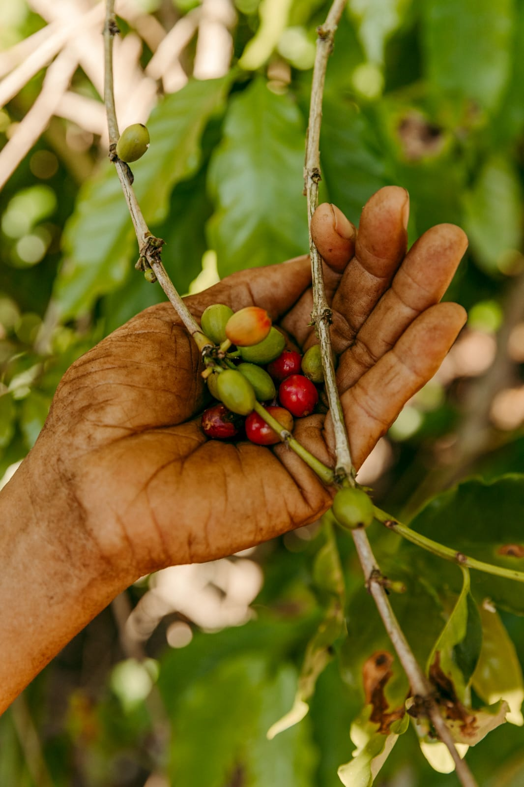
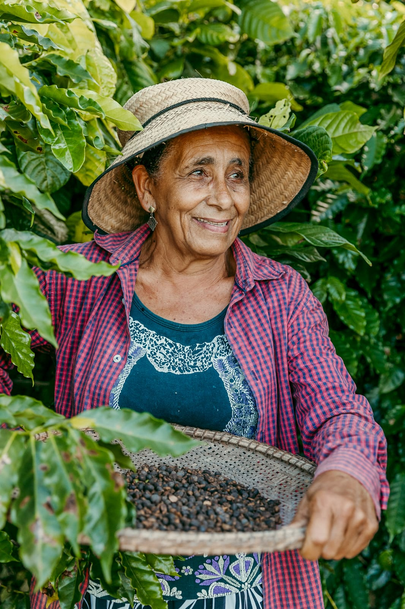
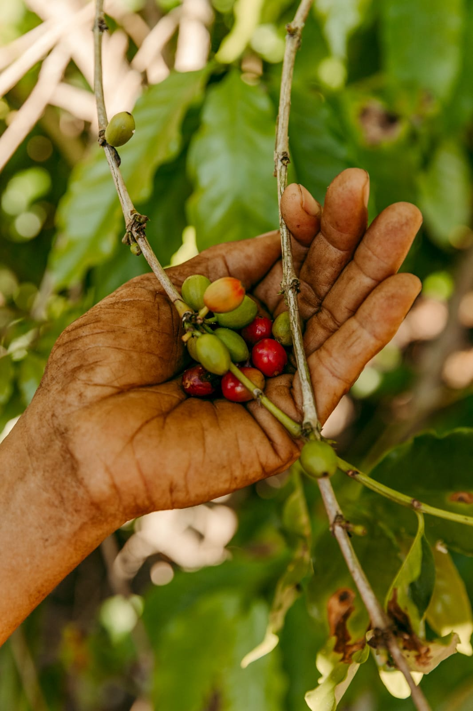
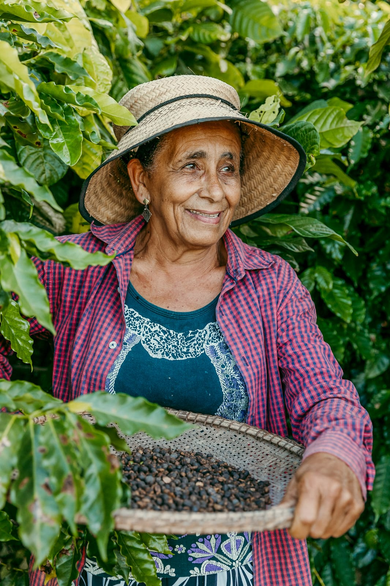
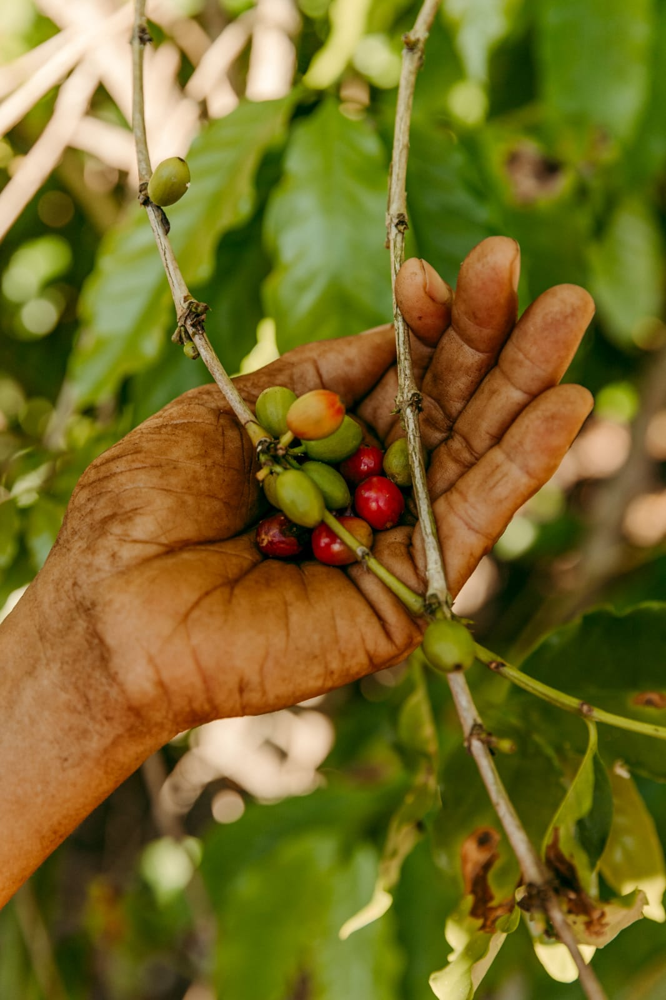
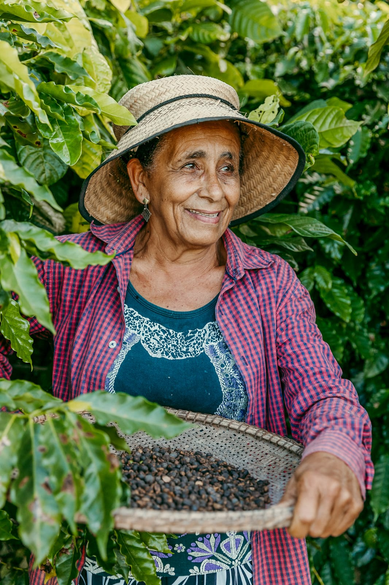
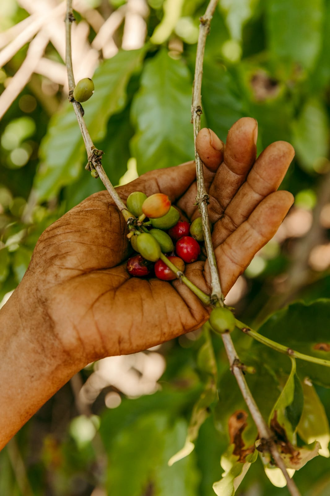
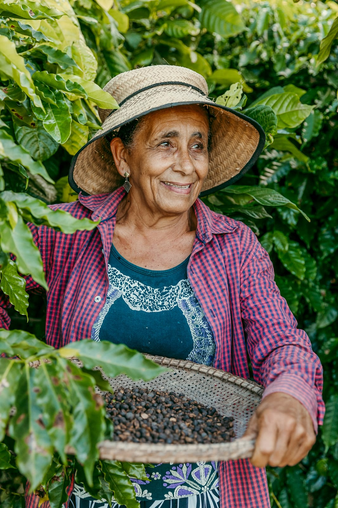

Álbum de Fotos
 



 



Sai fora seu Roque vem ver, o povo roubando seu café, Sai fora Seu Roque vem ver, o povo roubando seu café, se não tem dinheiro não pode, colocar catadeira no café.
Lindaura Santos (Coca cola)
O café é uma das maiores riquezas do Brasil desde o século XVIII, tornando-se o principal produto de exportação do país. A economia cafeeira teve um papel fundamental no desenvolvimento nacional, inicialmente baseada em técnicas simples de produção que contavam com o trabalho escravo. Durante a República Velha, o café foi responsável por impulsionar a economia, porém também contribuiu para acentuar as desigualdades sociais existentes. Mesmo após a abolição da escravatura, o café continuou desempenhando um papel vital da população brasileira, especialmente na Bahia. Com a queda da Bolsa de valores de Nova York, a exportações de café fora, drasticamente reduzidas, pressionando o governo brasileiro a desenvolver a substituição do cultivo de café por criação e gado bovino. Muitos cafezais em Elísio Medrado foram derrubados e queimados para que assim, a oferta do café diminuísse e consequentemente aumentasse seu preço. Muitas famílias que sobreviviam com a cultura do café sofreram grande impacto dessa mudança que aumentou consideravelmente a desigualdade social no Vale do Jiquiriçá e também no Recôncavo Baiano. Apesar das transformações ocorridas ao longo do tempo e da atual diversificação das ocupações femininas, a tradição da cultura do café permanece enraizada na história do Brasil até os dias atuais, e mesmo sendo enfraquecida no Vale do Jiquiriçá é imprescindível valorizar e preservar a memória do relevante papel desempenhado pelas mulheres na cadeia produtiva cafeeira. A importância das cantigas entoadas por essas mulheres como símbolo de resistência, pois, embora as próprias mulheres possam desaparecer com o tempo, as músicas por elas entoadas devem ser preservadas como um legado cultural que aliviava as tensões do labor e promoviam a união e fortalecia os laços entre elas durante o árduo trabalho nos cafezais. As cantigas de trabalho, que também eram conhecidas como "modas de trabalho", serviam não apenas para entreter e alegrar as trabalhadoras durante as árduas jornadas nos cafezais, mas também para coordenar os movimentos e ritmos do trabalho em grupo. Muitas vezes, as letras das cantigas abordavam temas do cotidiano rural, como o amor, a saudade, a natureza e até críticas sociais...
As cantigas entoadas durante a colheita do café tinham um papel importante na criação de um ambiente de cooperação e solidariedade entre as mulheres, fortalecendo os laços comunitários e promovendo a união entre as pessoas que compartilhavam aquela atividade. "Era um tempo muito bom, onde ninguém passava fome e todos se ajudavam. Apesar das intrigas que eventualmente surgiam entre as pessoas, durante a colheita do café todos se tornavam iguais, com um único objetivo: sustentar suas famílias". Relatou uma. Relatos como esse reforçam a importância não apenas da cultura do café, mas o relevante papel das mulheres que sempre foram esquecidas pela História mesmo tendo um papel tão ativo em todos os aspectos da vida econômica, social e cultural do nosso país, principalmente na Bahia e no Vale do Jiquiriçá. A manifestação cultural de entoar cantigas nos cafezais não só representava um momento de descontração e expressão artística no duro trabalho, mas também era uma forma de preservar a identidade e a história das comunidades, transmitindo valores e tradições que fazem parte do patrimônio cultural brasileiro. Defender e ratificar as cantigas entoadas na cultura do café não só preserva a história dessas mulheres e sua importância, mas também serve como argumento sólido para enriquecer a narrativa em questão. A tradição da cultura do café e as cantigas, não apenas mantiveram apenas o sustento das famílias, mas também serviram como um símbolo de resistência e união familiar. É fundamental destacar esse patrimônio e preservar essa herança cultural que moldou uma grande parte importante da identidade da Bahia e principalmente do Vale do Jiquirçá. Que essas cantigas sejam entoadas ainda mais forte em nossas vidas como símbolo de esperança e de valorização das mulheres. Um patrimônio que do doce do fruto ao amargo do grão, mulheres catadeiras de café que carregavam consigo a história do café, uma tradição que tinha com a base a enraizada na cultura e na resistência. Mulheres fortes, que com canções deixaram um legado emocionante que ecoa através do tempo.
REIS, Marcus. Migalhas de peso. Histórico e evolução do crédito rural brasileiro. Da colônia extrativista aos modernos títulos e mecanismos de financiamento e comercialização da produção agrícola. Mai. 2017. Disponível em: https://www.migalhas.com.br/depeso/258621/historico-e-evolucao-do-credito-rural-brasileiro--da-colonia-extrativista-aos-modernos-titulos-e-mec. Acesso em: 29, Jul 2024.
Industrialização brasileira: vargas e jk. Proenem. Disponível em: https://proenem.com.br/enem/geografia/industrializacao-brasileira-vargas-e-jk/. Acesso em: 29, Jul 2024.
A crise de 1929. ABIC Associação Brasileira de Industria de café. Rio de janeiro. 28, Jun 2021. Disponível em: https://www.abic.com.br/tudo-de-cafe/a-crise-de-1929. Acesso em: 29, Jul 2024.
Gostaríamos de expressar nosso mais profundo agradecimento a todos os envolvidos no projeto "Café e cantoria: a resistência melódica das mulheres catadeiras". Somos gratos por toda à nossa dedicada equipe, composta por Letícia dos Santos Bastos, Vitória Bastos Reis dos Anjos, Mariana Jesus dos Santos, Larissa Silva de Oliveira e Luís Henrique Oliveira de Jesus. Cada um de vocês trouxe um talento único e uma paixão inigualável, que foram fundamentais para a concretização deste projeto.
Um agradecimento especial à Yasmin Witzel de Souza, cuja colaboração foi essencial para que este projeto se tornasse uma realidade. Sua dedicação e apoio constante nos inspiraram a seguir em frente, mesmo nos momentos mais desafiadores.
Por fim, nosso mais sincero agradecimento ao professor orientador Jenivaldo Zelly. Sua orientação, sabedoria e paciência foram cruciais para o nosso sucesso. Obrigado por nos guiar e ajudar a transformar nossas ideias em realidade. Sem a sua ajuda, este projeto não teria sido possível.